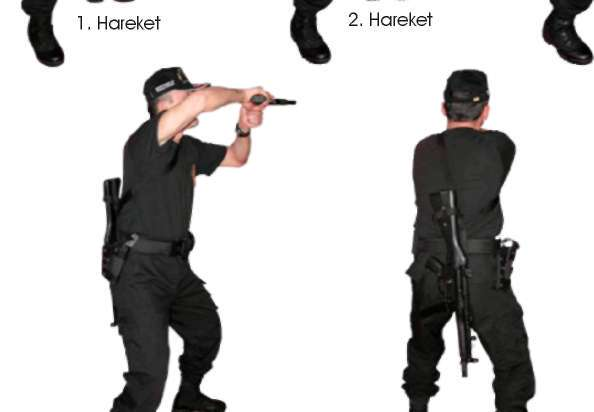

' ^ ,
i ^K '%
'o.
'
^
% '>& %* ^ . 'K,
" % ,
'ö,
' ^ ,
%
K ^
BAŞLANGIÇ
''On NOKTASI
Şekil-15.d) Hedeflere Çapraz Yürürken Sağdan Çıkan Hedeflere Hareket Hâlinde Atış
İstasyonu Hâlinde Atış İstasyonu
BAŞLANGIÇ
NOKTASI
Şekil-15.e) Hedeflere Çapraz Yürürken Soldan Çıkan Hedeflere Hareket Hâlinde Atış İstasyonu 138

BÖLÜM
İLERİ SEVİYE ATIŞ TEKNİKLERİ
2.7. MP5 MAKİNALI TABANCADAN YARI OTAMATİK TABANCAYA GEÇİŞ
TEKNİĞİ (SİLAH DEĞİŞTİRME)
Açıklama
Silah değiştirme tekniği MP5 makinalı tabancadan yarı otomatik tabancaya doğru olur. Operasyon veya herhangi bir sıcak temas esnasında kullandığınız MP5 makinalı tabancanızda fişeğin bitmesi, tutukluk veya arıza yapması durumunda, silahınızı değiştirmeniz gerekiyorsa, bunu iki şekilde yapabilirsiniz.
1. Silahı değiştirdikten sonra koşu esnasında herhangi bir teknik uygulayacak-sanız, kullanmakta olduğunuz MP5 makinalı tabancanızın askı kayışının boynunuza takılışına göre sağ veya soldan arkaya, yani sırtınıza doğru fırlatın. Kılıfınızda bulunan yarı otomatik tabancanızı çekin. Yarı otomatik tabancanız boşsa kurarak, dolu ise direk hedefinize doğrultarak atış yapın. (Bakınız Resim-18.a) 3. Hareket
5. Hareket
Resim-18.a) MP5 Makinalı Tabancadan Yarı Otomatik Tabancaya Geçerek Atış
Tekniği (Geriye Atarak)